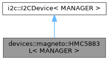

TODO rework to fit new API There are plenty of devices of all kinds, based on I2C interface, that you may want to connect to your Arduino or a board you created with an AVR ATmega or ATtiny MCU.
If you want to learn more about I2C concepts and vocabulary, you can find further information on Wikipedia.
Unfortunately, FastArduino obviously cannot provide specific support for all existing I2C devices.
However, based on a given device datasheet, it can be quite easy to add a FastArduino driver for any I2C device.
FastArduino provides all the necessary classes and methods for you to implement such a specific driver.
The following sections describe the FastArduino API for I2C device driver implementation, and list the steps to successfully implement such a driver.
FastArduino I2C driver API
The generic support for I2C device driver in FastArduino looks quite simple, it is entirely embedded in 1 class, i2c::I2CDevice; this is a template class which all actual I2C device drivers shall derive from.
This template class has only one MODE parameter, of type i2c::I2CMode, which defines the I2C bus speed, among two supported speeds: Normal (100KHz) or Fast (400KHz).
The i2c::I2CDevice class mainly contains protected methods to read and write content to a device on the I2C bus.
As you can see in the following diagrams, the drivers for I2C devices currently supported by FastArduino directly derive from i2c::I2CDevice:
- DS1307 Real Time Clock chip

- MCP23017 16-Bit I/O Expander chip

- MPU6050 3D Accelerometer-Gyroscope chip

- HMC5883L 3D Compass chip 
Do note that, for the RTC DS1307 device above, MODE template parameter has been forced to i2c::I2CMode::STANDARD because that device does not support Fast I2C mode. Driver classes for other devices are still template with i2c::I2CMode template parameter as they can be used in any mode.
Creating a new driver for an I2C device is as simple as:
- Creating a
i2c::I2CDevicesubclass; let's call itMyI2CDevicein the rest of this page. - Add a constructor with one argument:
MyI2CDevice::MyI2CDevice(MANAGER& manager)whereMANAGERis directly defined asi2c::I2CManager<MODE>in superclassi2c::I2CDevice. - Add proper
publicAPI on thisMyI2CDeviceclass, based on actual device features we want to use. - Implement this API through the basic
protectedAPI methods inherited fromi2c::I2CDevice
I2CDevice API
Subclassing i2c::I2CDevice gives MyI2CDevice access to all low-level protected methods:
i2c::I2CDevice.read(uint8_t, uint8_t*, uint8_t, BusConditions): read an array of bytes from the I2C devicei2c::I2CDevice.read(uint8_t, T&, BusConditions): read bytes as a structTfrom the I2C devicei2c::I2CDevice.write(uint8_t, uint8_t, BusConditions): write one byte to the I2C devicei2c::I2CDevice.write(uint8_t, const uint8_t*, uint8_t, BusConditions): write an array of bytes to the I2C devicei2c::I2CDevice.write(uint8_t, const T&, BusConditions): write bytes of a structTto the I2C device
All methods above start with uint8_t address as their first argument. This is the unique device address on the I2C bus, made of 7 bits. Typically an I2C device falls in one of the following categories:
- it has a fixed I2C address that cannot be changed (e.g. DS1307 RTC chip)
- it has an I2C address that can be changed by hardware (e.g. jumpers) among a limited range of possible addresses (e.g. MCP23017 I/O expander chip, MPU 6050 acceleromete/gyroscope chip)
- it has a fixed I2C address that can be changed by software (e.g. VL53L0X "micro lidar" chip); this is generally harder to support.
For devices in category 1, you would typically define the address as a constant in MyI2CDevice.
For devices in category 2, you would rather define an enum class limiting the possible addresses configurable by hardware, or pass the address (as uint8_t) to the driver class constructor.
For devices in category 3, you would first define the fixed address as a constant, then define an API to change it (as a data member of MyI2CDevice).
All methods above always end with a i2c::BusConditions conditions argument. This argument is super important as it defines how each method shall handle the I2C bus (this bus is shared between all devices and thus access to it must follow certain rules).
In particular, before any access to the I2C bus, a host device (the MCU) must first send a "START condition" onto it, and only after that can it initialize a communication to a given device, known by its I2C address.
All bytes sent or received must be acknowledged (though special signals on SDA and SCL wires) by the recipient.
Once a transmission between a host and a device is finished, the bus must be released (for later transmissions) through a "STOP condition".
The i2c::BusConditions argument for each read/write method indicates whether te method should first acquire the I2C bus before writing or reading, if it should release the I2C bus after writing or reading. This allows your API implementation to perform a sequence of calls to the I2C device, where the first call will acquire the bus and the last call will release it, and calls in between will not need to acquire or release the bus.
Note that many I2C devices communication is based on writing and reading "registers", each device having its own list of specific registers. Hence most I2C device drivers API will consist in reading or writing one register. In FastArduino, drivers like devices::magneto::HMC5883L first define private methods to read and write registers, which other API methods can simply use (by passing the right register number and proper value):
Note usage of using BUSCOND = i2c::BusConditions; and using i2c::Status::OK; to ease code writing and reading.
In this snippet, write_register() is straightforward:
- It starts (
START_NO_STOP) I2C communication with deviceDEVICE_ADDRESSand sends register numberaddressto the I2C device - It then sends
valuebyte to the same device (as part of the same transmission) which will be written to the device register, then it stops (NO_START_STOP) I2C communication
read_register() is a bit more special:
- It starts (
START_NO_STOP) I2C communication with deviceDEVICE_ADDRESSand sends register numberaddressto the I2C device (same as before) - It then restarts (
REPEAT_START_STOP) a new I2C transmission to ask the device for the value in that register, then it finally stops (REPEAT_START_STOP) I2C communication
Here, in step 2, we cannot use the same transmission to read after write, as one transmission defines the data direction; however, we can take advantage of the current write transmission (I2C bus already accquired) to restart a new transmission but for reading. Please do note that some I2C devices do support this way for write-then-read, but not all of them; refer to the target device datahseet for further details.
Note that both i2c::I2CDevice.read() and i2c::I2CDevice.write() sets of methods exist in a template flavour that allows using struct types references directly, instead of using arrays of bytes, which can simplify code implementation.
Debugging support for a new device (low-level)
In general, before developing a full-fledged driver for an I2C device, you need to learn how to use that device.
Based on the device datasheet, you first learn how to manipulate the device through the I2C bus.
For better understanding, you generally use a debugging example that helps demonstrate how the device works.
One easy way to develop such a debugging sample is to create a program with just one source code file containing:
- proper
#includedirectives - a
PublicDeviceclass that derives fromi2c::I2CDevicebut declaresmain()as afriend, which allows direct calls, frommain(), toprotectedAPI ofi2c::I2CDevice, for easy testing - directly call SPI API on a
PublicDeviceinstance, frommain()and trace results to a console, through UART
FastArduino includes such a debugging sample in examples/i2c/I2CDeviceProto example, copied hereafter:
This example is just an empty skeleton for your own tests. It is made of several parts:
Those lines include a few headers necessary (or just useful) to debug an I2C device.
Then an output stream is created for tracing through UART, and the necessary UART ISR is registered.
Any specificity of the tested I2C device is defined as a constant in the next code section. Note the definition of DEVICE_ADDRESS constant: this 7-bit I2C device address is shifted one bit left as an 8th bit will be added (I2C communication protocol) to define data direction for each transmission.
This is where we define a utility class to debug our I2C interface to the tested device. PublicDevice class does nothing but making all protected methods callable from main(), so that we can directly perform our code tests in main(), without thinking much about proper API design now.
This utility method is automatically called back by FastArduino I2C library for every low-level I2C command; it is useful to debug communication issues with the target I2C device during tests.
This is the main() function where it all happens. First we initialize the MCU and the UART for tracing.
Here we simply initialize I2C function on the UNO.
We then declare the device variable that we will use for testing our I2C device.
Finally we start an infinite loop where we can call read/write methods on device in order to test the way to handle the target device.
Defining the driver API based on device features
At this level, you have already been able to debug how the device works and you have a good overview of what features you want to provide to developers (and to yourself as the first of all) who will want to use this device.
An easy way is to provide an API that maps every feature found in the datasheet to its dedicated method. This is what we would call a low-level API; that is the minimum your driver should provide.
Additionally MyI2CDevice might implement a higher level API, based on the low-level one, but this is not mandatory; actually, this is not even advised generally, as this high-level API might be implemented in a distinct class. Using a separate class for high-level API allows other developers to develop their own high-level API without having to use yours if it does not fit their needs.
It is often advised to add begin() and end() methods to MyI2CDevice when it makes sense. begin() would initialize the device before usage (most devices will require special setup before use).
Implementing the driver API
This step consists in implementing the API defined in the step before.
Typically every API method will be made of:
write()calls to the deviceread()calls to the device- various conversions or calculation before calling
write()or after callingread()
Here is a concrete example from devices::rtc::DS1307, another I2C device driver in FastArduino:
Note that, besides one I2C transmission with one write() followed by one read(), most code here consists in converting each received piece of data to proper format (BCD to binary).
The last mile: add driver to FastArduino project!
Bravo! You successfully added FastArduino support, in your own project, for a specific I2C device!
The last mile would now consist in adding your valuable work to FastArduino library! You do not have to, of course, but this would be a good way to:
- thank other people who provided FastArduino open source library to you
- feel part of the community
- get feedback on your work, potentially allowing it to be further improved
- share your work with the rest of the world
However, like for a marathon, the last mile can be difficult! In order to run this last mile, you will have to:
- first accept FastArduino Apache License 2.0 for your contribution, or discuss with FastArduino owner for another one, if compatible
- follow FastArduino coding guidelines: this might impose some code rewrite or reformatting
- add API documentation with doxygen: this is mandatory for all
publicmethods, and advised forprotectedones. - add one (or more) usage example and integrate it in the
examples/i2cdirectory; examples must be kept simple but still demonstrate the API usage; example circuits (connection pins) shall be described. These examples can be further used as "tests" before new releases of FastArduino. - optionally develop a tutorial for this device
- prepare and propose a PR to FastArduino project
Important condition: in order to accept merging a PR to FastArduino, I must be able to check it by myself, hence I need to first have the new supported device available on my workbench; I will gladly buy one (or a few) if it is affordable and easy to find.